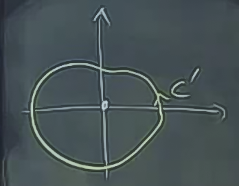
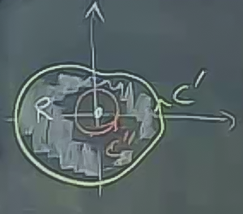
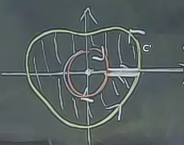
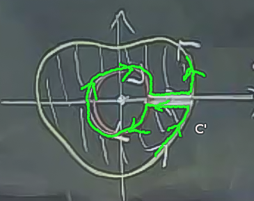

Ders 24
Green'in Teorisinin iki şeklini görmüştük
$$ \oint_C \vec{F} \cdot \vec{T} \mathrm{d} s = \int \int_R \mathrm{curl} \vec{F} \mathrm{d} A $$
$$ \oint_C \vec{F} \cdot \vec{n} \mathrm{d} s = \int \int_R \mathrm{div} \vec{F} \mathrm{d} A $$
Bu eşitliklerin sol tarafı için $\vec{F}$'in sadece $C$ üzerinde tanımlı olması yeterlidir. Fakat eşitliklerin anlamlı olması için, yani sağ tarafının da doğru olması için $\vec{F}$'in $R$ içindeki her noktada tanımlı olması gerekir. Eğer $R$ içinde tanımlı olmayan tek bir nokta bile varsa, o zaman üstteki eşitlikleri kullanamayız.
Örnek
$$ \vec{F} = \frac{ -y\hat{i} + x\hat{j}}{x^2+y^2} $$
Üstteki $\vec{F}$ orijinde tanımlı değildir, diğer her yerde $\mathrm{curl} \vec{F} = 0$. İki olasılığa bakalım, diyelim ki "şekilsel" olarak benzer alanlar orijini içeren, bir de içermeyen şekillerde verilmiş
Orijin içermeyen alan için
$$ \oint_C \vec{F} \cdot \mathrm{d}\vec{r} = \int \int_R \underbrace{\mathrm{curl} \vec{F}}_{0} \mathrm{d} A = 0 $$
Orijin içeren alan için Green Teori'sini kullanamayız, çünkü çift entegral için alan tanımı her yerde tutmalı, ama burada alan tanımı orijinde geçersiz. Ama "kullanamayız" derken aslında "direk olarak kullanamayız" demek daha doğru olur, dolaylı olarak Green Teori'sini kullanmanın bir yolu var. Tüm alan için olmasa da alanın bir parçası için Green Teori'sini kullanabilirim.
Eğer şu alan için GT kullanamıyorsam

Üstteki bölgenin ortasındaki ufak bir bölgeyi çıkartırsam, geri kalan üzerinde GT kullanabilirim

$$ \oint_{C'} \vec{F} \cdot \mathrm{d}\vec{r} - \oint_{C"} \vec{F} \cdot \mathrm{d}\vec{r} = \int \int_R \mathrm{curl} \vec{F} \mathrm{d} A $$
Fakat üstteki formülü nasıl uygulayacağız? Şöyle bir ek düşünelim,

İki eğri arasında bir "köprü" gibi bir geçiş noktası var, bu sonsuz küçüklükteki bir aralık. Öyle ki bu aralık ile dış eğriden iç eğriye, oradan tekrar dışarı çıkıyoruz. Kabaca şöyle gösterilebilir (yeşil çizgi)

Şimdi bu kesintisiz eğri üzerinden Green'in Teori'si kullanabilirim, çünkü hem tam bir eğri var, hem de tanımsız olan orijin artık hesaba dahil değil.
Tüm çizgisel entegral suna eşit
$$ \oint_{C'} - \oint_{C"} + \textit{ince kesit bir ileri bir geri toplanıp iptal oluyor} $$
İçerideki kısım entegralinin eksi olarak dahil edilmesinin sebebi, $C"$ üzerindeki dönüşün saat yönünde olması, saat yönü tersi olsaydı artı olarak alınabilirdi.
Uzaklaşım (divergence) üzerinden aynı numarayı kullanabiliriz.
Tanım
Düzlemdeki bağlangılı bir bölgenin basit şekilde bağlantılı (simply connected) olduğu söylenir eğer, $R$ içindeki her kapalı eğrinin iç kısmı yine $R$ içindeyse.
Bağlantılı derken düz, tek bir parça kastediyoruz.
Mesela alttaki bölge basit şekilde bağlantılı değildir.
Kırmızı ile gösterilen eğri içindekilerin tamamı $R$ içinde değildir.
İlk verdiğimiz örnekteki problem, o zaman, tanımlanan bölgenin basitçe bağlı bir bölge olmamasıydı, orijin noktasında bir delik vardı.
Eğer $\mathrm{curl} \vec{F} = 0$ ve $\vec{F}$'in tanım alanı (domain of definition) basitçe bağlı bir bölge ise, o zaman $\vec{F}$ bir gradyan alanı ve muhafazakardır.
[hoca eski konuların üzerinde geçiyor, bunlar atlandı]
Yukarı